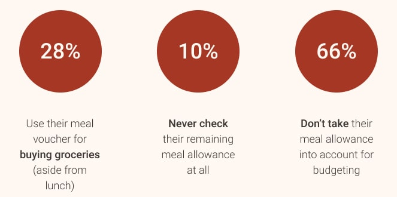
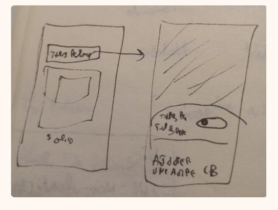
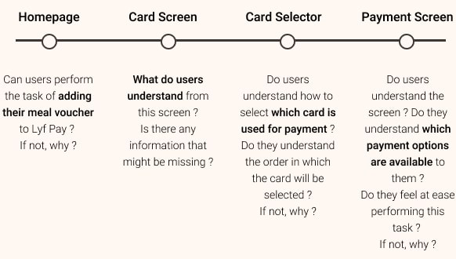

One of the first projects I took in my Lyf Pay Experience, I had to take part in integrating a new payment method: the meal voucher, or as we French call it: a "ticket restaurant".
The goal of this project was simple: implement a feature allowing users to pay within the app using the meal voucher alone or combined with another payment card, depending on their situation.
Role : One-man UX Research team, worked closely to Anne-Laure
Donzé (Product Owner) & Naama Bassan (Design Lead)
Methodology : Internal Survey, Wireframe, Prototype, User
Testing, Guerilla testing
Tools : Google Forms, Typeform, Figma, Marvel, Notion
Time : Approx. 4 months
To understand the context,
we have to know how the meal voucher works
:
• First, the meal voucher in this context is a debit card. You can use
it contactless or with a code, which is provided you via an external
application,
that may or may not have been properly configured. That's pain point
n°1.
• On this card, you are given a monthly meal allowance, the amount
depending on your work contract. To know how much money you have left
each day/month,
you have to check on the external application mentioned earlier
There's pain point n°2.
• You can use this card only to buy food or groceries. As a result, most
restaurants will accept it, but some supermarkets will as well,
though you can't know in advance which ones.
That's pain point n°3.
• You can use this card for €19 max per day, but
it doesn't work on Sundays and bank holidays,
because you are supposed to use it on your working days.
And that's pain point n°4.
There are lots of things to consider about this card, so I wanted to know from the very start how people used it. So I went away and asked people. How? By running a survey on my very own colleagues.
Yes, I did primary research
on my very own colleagues and not the final users.
Why did I do that?
Only because
I did not ask questions about any interface, but just about the habits of using a product that
we were
actually using. So in a way, my colleagues were final users.
That way,
I got over 50 answers in less than 2 days, so
I could start and gather insights straight away. I would definitely do
it again if given the choice! I had a few hypotheses:
• People used it mostly for lunch every day
but not that much for buying groceries.
• People
didn't use often the external application, so
they didn't check often their remaining allowance.
• The meal voucher is not considered as part of the bank account and
is not accounted in people's budget as such.
Here is a summary of what I've found.

This data tells us there is a potential pain point in checking this
information, in which our app could be useful!
It also shows that
payments should be presented differently according to the card used
to reflect the underyling mental models, as budgeting was not conceptualized the same way for all cards.
With all that in mind, we can start to imagine what would be a pleasant
experience for Lyf Pay users.
And so, I went on my way, did some quick prototypes and did my
first user testing session on the topic.
For this session, I went guerilla mostly because I didn't have a complete user flow to test but just a few screens and I needed insights quickly to move on with the project.
With hindsight, I realize now that I also wanted to try guerilla testing, because I was eager to try new methodologies. But isn't it part of the job to also try new methodologies while doing research?
On top of that, in-house user testing can take 1-2 weeks from planning to doing, guerilla can be done in a day. The main drawback was that there was NO way to know if people were users of the meal voucher, or if they even knew it at all.
I got my 5 participants after only one hour of testing, and by the time I was done, we already got a lot to improve before the next round of testing.
Guerilla testing is excellent for assessing basic understanding. Even if your testers don't know about a concept or feature, they will try to wrap their mind around it and can at least make some pretty good educated guesses about something they might have heard of. It can, therefore, be useful to use guerilla testing if your resources are limited, before a more thorough round of user testing with your final users.
So, when screens were refined, we got to make the whole user flows, from sign up to finish. That is when I did proper recruiting, specifically looking for people using the meal voucher and not our application.

And after another a few rounds of testing with 12 participants, this
is what I got:
•
Most users could intuitively add their meal voucher in the app, and the info displayed
was easily understood.
•
The screen payment and the "multi-payment" feature were
easily understood, but some improvement could be made on the card selector.
• Error messages could be improved and sending
specific notifications could improve the experience.
• The overall experience was satisfying and
participants were eager to try the feature,
which is always a good sign!
Overall, this project was a great experience, in solving the right method at the right time of the project and framing questions. It was also very gratifying being involved in the research phase of the feature, and to play a part in building the best implementation possible.
What I especially liked was trying different methodologies, starting from the survey to learn about mental models we might not have discovered, and design screens based on those models. Then, testing prototypes with two different types of user testing gave us a better understanding of the context we were going into and helped us shape this feature the way it is now.
Want to read more ? Here's one about the work I did on Lyf Pay redesign.